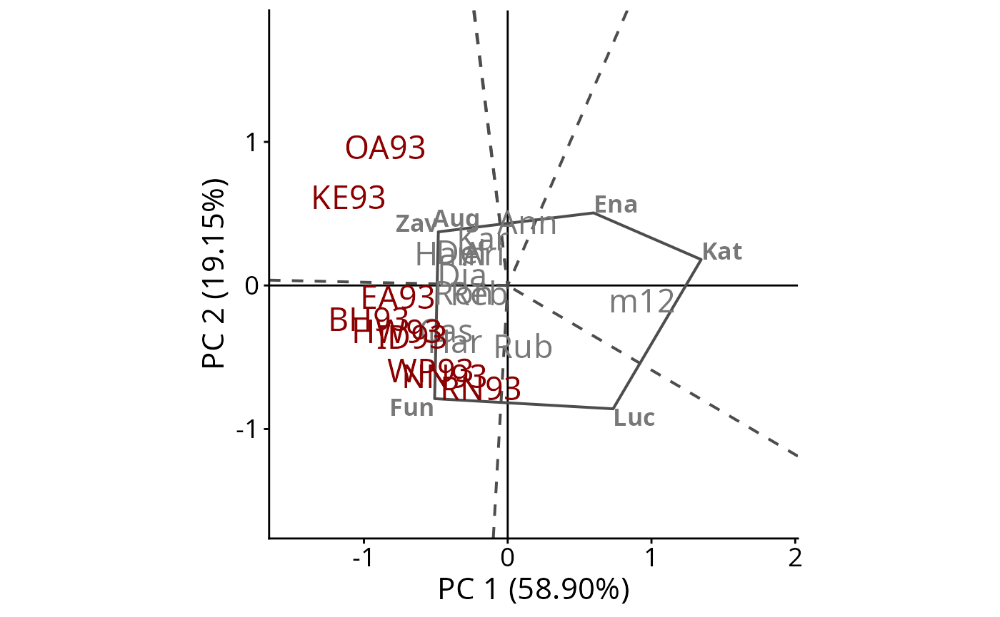

How to use the geneticae Shiny App
A web application for the Analysis of Multi Environment Agronomic Trials
Julia Angelini
Marcos Prunello
Gerardo Cervigni
Centro de Estudios Fotosintéticos y Bioquímicos
Universidad Nacional de Rosario
Rosario, Argentina
Marcos Prunello
Gerardo Cervigni
Centro de Estudios Fotosintéticos y Bioquímicos
Universidad Nacional de Rosario
Rosario, Argentina
2026-04-17
Source:vignettes/b-shiny.Rmd
b-shiny.RmdThe geneticae package can be used through this
Shiny app, making it available not only for R programmers. Source code
is in GitHub
repo.
Motivation
Although there are R packages which tackle different aspects of MET
data analysis, there aren’t any packages capable of performing all the
steps that need to be considered. The geneticae package was created to
gather in one place the most useful functions for this type of analysis
and it also implements new methodology which can be found in recent
literature. More importantly, geneticae is the first package to
implement the robust AMMI model and new imputation methods not available
before. In addition, there is no need to preprocess the data to use the
geneticae package, as it the case of some previous packages
which require a data frame or matrix containing genotype by environment
means with the genotypes in rows and the environments in columns. In
this package, data in long format is required. Genotypes, environments,
repetitions (if any) and phenotypic traits of interest can be presented
in any order and there is no restriction on columns names. Also, extra
information that will not be used in the analysis may be present in the
dataset. Finally, geneticae offers a wide variety of
options to customize the biplots, which are part of the graphical output
of these methods.
The goal of the Geneticae Shiny Web APP is to provide a graphical user interface for the R package, so that it can be used by breeders and analysts with no previous experience in R programming. It is an interactive, noncommercial and open source software, offering a free alternative to available commercial software to analize METs.
Small example
If you are just getting started with Geneticae APP we recommend visiting and exploring the examples throughout the tutorial in the APP. Here we present a small example.
The dataset yan.winterwheat available as example dataset has information about the yield of 18 winter wheat varieties grown in nine environments in Ontario at 1993. The GGE biplot visually addresses many issues relative to genotype and test environment evaluation. The GGE Biplot tab allows to builds several GGE biplots views. The basic one is produced by default. If Which Won Where/What is indicate in plot type, and the other options are left by default the polygonal view of the GGE biplots is provides (Figure 1). This is an effective way to visualize the which-won-where pattern of MET data. Cultivars in the vertices of the polygon (Fun,Zav, Ena, Kat and Luc) are those with the longest vectors, in their respective directions, which is a measure of the ability to respond to environments. The vertex cultivars are, therefore, among the most responsive cultivars; all other cultivars are less responsive in their respective directions.
The dotted lines are perpendicular to the polygon sides and divide the biplot into mega-environments, each of which has a vertex cultivar, which is the one with the highest yield (phenotype) in all environments found in it. OA93 and KE93 are in the same sector, separated from the rest of the biplot by two perpendicular lines, and Zav is the highest-yielding cultivar in this sector. Fun is the highest-yielding cultivar in its sector, which contains seven environments, namely, EA93, BH93, HW93, ID93, WP93, NN93, and RN93. No environments fell in the sectors with Ena, Kat, and Luc as vertex cultivars. This indicates that these vertex cultivars were not the best in any of the test environments. Moreover, these cultivars were the poorest in some or all of the environments.

Figure: Polygon view of the GGE biplot, showing which cultivars presented highest yield in each environment. The scaling method used is symmetrical singular value partitioning (by default). The 78% of G + GE variability is explained by the first two multiplicative terms. Cultivars are shown in lowercase and environments in uppercase.